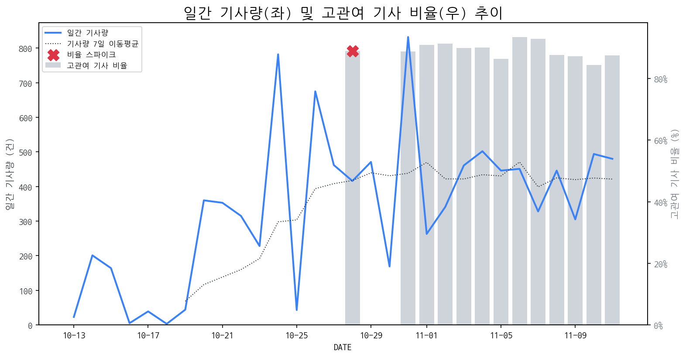

1
시장 활동 지표
기사량 추세 & 이상 징후 탐지
시장의 '전체 기사량'이 평소보다 비정상적으로 급증했는지(Spike)를 차트로 확인하고, LLM이 분석한 급등의 핵심 원인을 파악할 수 있음

고관여 기사란? 산업 연관 키워드로 수집된 기사들 중 디스플레이 키워드에 가중치를 반영하여 도출된 관련성 높은 기사
수집된 기사 수 (2025-11-11)
480
-4% WoW
기사량 변동 수준 (7일 이동평균 대비)
±6.7% 이하
2
오늘의 키워드
급격한 관심 ↑, 주목해야 할 키워드
1
폴더블
+4.4σ
애플 폴더블폰 개발 가능성 부각과 시장 성장 둔화 전망이 교차하며 키워드 관심도 급증.
Related Metrics
금일 언급량: 17, 전일 대비: +17
Interpretation
애플 효과 vs 시장 한계
Next Step
'폴더블' 관련 상세 기사 및 경쟁사 반응 모니터링
2
oled
+2.0σ
모바일 OLED 수요 호조 및 LGD 흑자 전환 기대감, 중국의 OLED 기술 추격 심화 등이 복합적으로 작용한 결과.
Related Metrics
금일 언급량: 12, 전일 대비: +4
Interpretation
OLED 시장 경쟁 심화 및 성장 동력 변화
Next Step
핵심 토픽 'OLED_Topic' 관련 신호입니다. 3번 섹션(키워드 감성분석)에서 해당 토픽의 감성 변동을 교차 확인하세요.
3
구글
+1.9σ
구글 고정밀 지도 반출 심의 지연과 웨이모 CFO 영입 관련 소식이 복합적으로 작용한 결과로 보임.
Related Metrics
금일 언급량: 5, 전일 대비: +4
Interpretation
구글, 자율주행 사업 집중?
Next Step
핵심 토픽 'Set_Manufacturer' 관련 신호입니다. 3번 섹션(키워드 감성분석)에서 해당 토픽의 감성 변동을 교차 확인하세요.
4
갤럭시
+1.8σ
갤럭시 XR 관련 OLED 패널 공급 계약 및 플래그십 모델의 지속적인 판매 호조 기대감이 반영됨.
Related Metrics
금일 언급량: 9, 전일 대비: +7
Interpretation
삼성 디스플레이, 하반기 실적 기대감
Next Step
'갤럭시' 관련 상세 기사 및 경쟁사 반응 모니터링
3
실시간 Risk 키워드
경계해야 할 시그널 탐지
특정 토픽의 부정 감성 점수가 급등할 때 이를 즉시 탐지하고, "근거 기사" 링크를 통해 리스크의 실체를 빠르게 파악할 수 있음
키워드 분석 결과, 오늘은 걱정할 만한 하락 신호가 없습니다. (부정 언급량 변화: +1.5σ 이내)
4
주요 이벤트 모니터링
실시간 산업 동향 파악을 위한 주요 활동
최근 발생한 주요 기업들의 신제품 출시, 투자 등 주요 이벤트를 제공하여 매일 경쟁사 동향을 확인할 수 있음
유리 기판 관련주인 태성, 한빛레이저, HB테크놀러지의 주가가 변동했다. 정확한 변동 방향(상승 또는 하락)은 제시되지 않았다.
Impact
유리 기판 시장에 대한 투자 심리 변화 가능성이 있으며, 관련 기업들의 단기적인 주가 변동성이 확대될 수 있다.
Next Step
해당 종목들의 실제 주가 변동 추이와 그 원인을 파악하고, 유리 기판 시장 전반에 미치는 영향 분석이 필요하다.
LG디스플레이(LGD)가 4년 만에 흑자 전환을 앞두고 있다. 미래 경쟁력 확보를 위해 투자 및 기술 개발에 집중하고 있다.
Impact
LGD의 흑자 전환은 디스플레이 시장 전반에 긍정적인 신호로 작용하며, OLED 기술 경쟁 심화를 야기할 수 있다.
Next Step
LGD의 기술 투자 방향 및 시장 전략 변화를 면밀히 분석하여 관련 시장에 대한 투자 및 사업 전략을 재검토해야 한다.
11월 2주 주요 제조업 전망 발표가 예정되어 있습니다. 이는 시장의 주요 플레이어들의 향후 사업 방향을 가늠할 수 있는 중요한 지표가 될 것입니다.
Impact
제조업 전망 결과에 따라 관련 산업 전반에 걸쳐 투자 심리 변화 및 주가 변동성이 확대될 수 있습니다.
Next Step
발표 내용과 관련 기업의 동향을 면밀히 모니터링하며, 잠재적 투자 기회 및 위험 요인을 식별해야 합니다.
인공지능 칩 수요 급증으로 인해 반도체 산업에 '실리콘 슈퍼사이클'이 시작되었으며, 이는 기존 반도체 시장의 판도를 뒤흔들 잠재력을 가지고 있습니다. 특히, AI 연산 능력 향상을 위한 고성능 반도체에 대한 투자가 활발해지면서 관련 기술 및 기업의 성장 가능성이 높아지고 있습니다.
Impact
AI 칩 수요 증가는 반도체 산업 전반의 성장 동력으로 작용하며, 특히 고성능 컴퓨팅, 데이터센터, 자율주행 등 AI 관련 분야의 혁신을 가속화할 것입니다.
Next Step
AI 칩 및 관련 반도체 기술 동향을 지속적으로 모니터링하고, 투자 및 사업 전략에 AI 반도체 시장의 성장 가능성을 반영해야 합니다.
5
지금 주목해야 할 뉴스 TOP 3
애플, '초슬림폰' 접고 '폴더블폰' 편다...동병상련 삼성과 격돌 예상
애플의 초슬림폰 ‘아이폰 에어가 판매 부진으로 한 세대 만에 단종 수순을 밟고 있는 가운데, 삼성전자 역시 초슬림폰 시장에서 뚜렷한 성과를 내지 못하며, 양사의 시선은 폴더블폰으로 향하고 있다.
PCB·FPCB 관련주, '함박웃음' 태성·코리아써키트·현우산업... '눈물' 심...
로컬 요약 모델 실행 중 오류 발생: 제목을 클릭하여 기사 전문을 확인할 수 있습니다.
글로벌 폴더블폰 성장세 둔화…고가·수요 정체가 요인
글로벌 폴더블폰 시장이 3분기 연속 부진을 이어가며 성장세가 둔화되고 있는 가운데, 유비리서치의 ‘소형 OLED 디스플레이 마켓 트래커’에 따르면, 2025년 1~3분기 폴더블폰용 OLED 출하량은 1670만 대로 전년 동기 대비 약 20% 감소했다.